{kind=link}
{kind=link}
{kind=link}
Conductive hydrogels
& flexible sensing
Combining collagen fiber networks with conductive polymer systems to study mechanical performance, environmental stability, multimodal sensing and triboelectric energy harvesting.
Sichuan University · Materials Research
Undergraduate Researcher
Light Chemical Engineering · Class of 2027
Functional soft materials, from polymer networks to flexible devices.
I am a fourth-year undergraduate at Sichuan University. My research explores conductive hydrogels and collagen-based composites for flexible sensing, energy harvesting and biomedical applications.
I am interested in how polymer chemistry, natural fiber networks and interfaces shape the performance of functional materials. My recent work at Westlake University explored n-type conjugated polymers and their integration with biomass materials.
Research, publications, experiences and a few milestones along the way.
Our work combines a collagen fiber network with a PDES-based conductive hydrogel for self-adhesion, anti-freezing performance, multimodal sensing and triboelectric energy harvesting.
Research period: January 2025 – January 2026
Studied n-type PBFDO synthesis through oxidative polymerization and reduction doping, explored its integration with biomass materials, and gained introductory experience in MXene synthesis.
Internship: July 13 – August 14, 2026
Co-authored research on robust, multifunctional skin-collagen-reinforced conductive hydrogels for multimodal sensing and triboelectric nanogenerators.
Received Second Prize in the sixth Sichuan University Intellectual Property Challenge, part of the university’s 2025–2026 Challenge Cup extracurricular academic and technological activities.
Investigated transparent collagen-based materials using a zirconium-tanned fiber framework and in situ acrylate polymerization, with fluorescent carbon dots for light conversion.
Research period: November 2023 – June 2025
Developed polyacrylamide/poly(itaconic acid) hydrogels reinforced by a tanned collagen fiber network for flexible sensing and triboelectric nanogenerators.
Colloids and Surfaces A · Major revision in progress · Second author
Explored dynamic imine and boronic ester networks, glucose- and pH-responsive drug release, and the regulation of NF-κB and PI3K/Akt/mTOR pathways for chronic wound repair.
Manuscript under submission
硫辛酸微凝胶的构筑及其在骨关节炎治疗中的应用研究
Explored injectable microgels designed for local retention, lubrication and degradation-controlled lipoic acid release to address inflammation and reactive oxygen species.
2025 college-level Student Innovation Training Programme · College of Biomedical Engineering, Sichuan University
Project member · Completed with a Pass · December 2025
Research period: September 2024 – September 2025
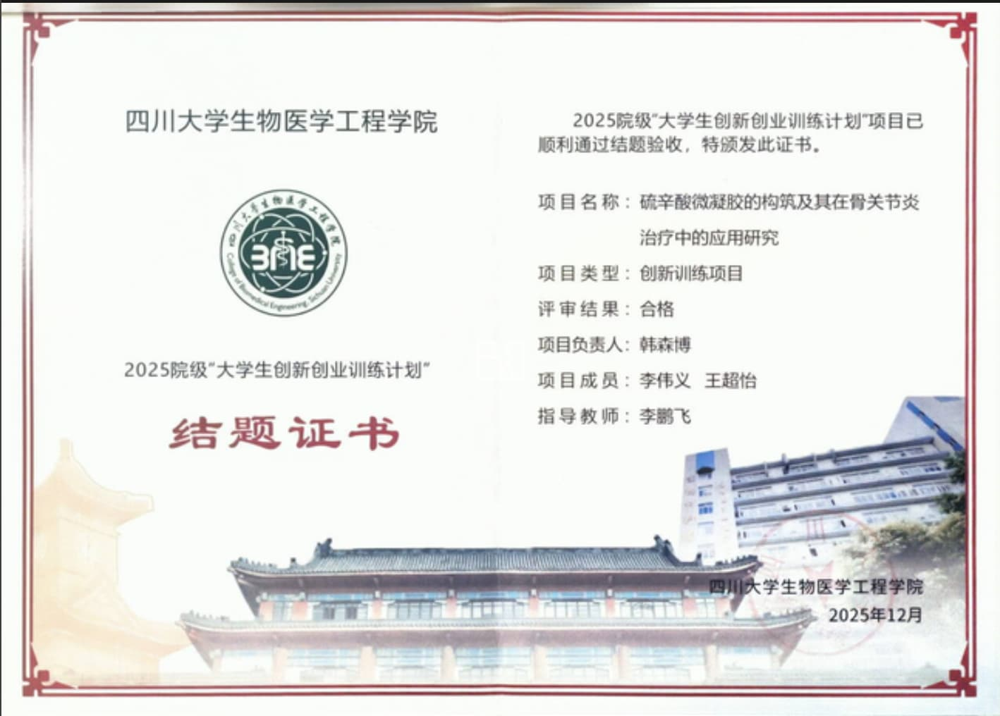
具有创面pH智能检测功能的抗菌抗氧化活性可注射胶原基水凝胶的研究
Investigated tea-derived carbon dots and a dialdehyde-chitosan/collagen network for pH-responsive fluorescence, antibacterial and antioxidant functions, and wound repair.
2025 university-level Student Innovation Training Programme · Sichuan University
Project leader · Completed with a Pass · December 2025
Research period: September 2024 – September 2025
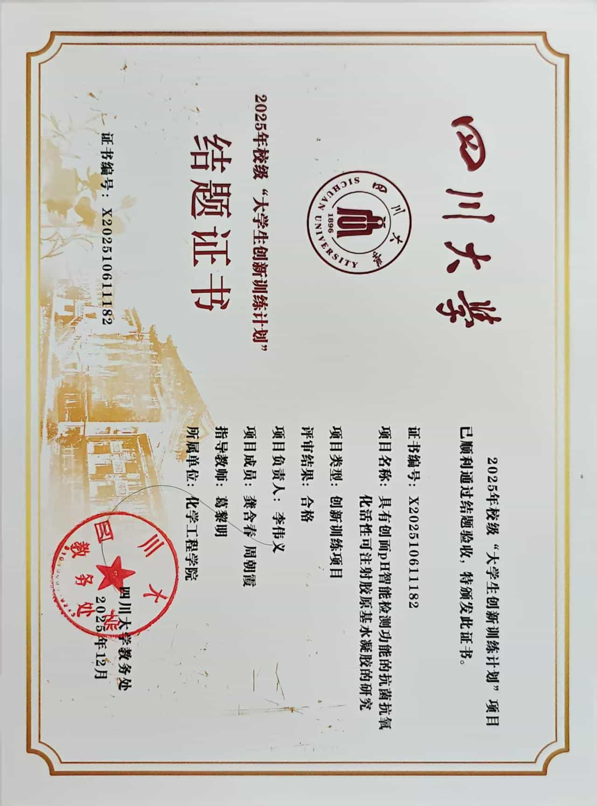
Received Sichuan University’s Outstanding Student recognition and comprehensive Third-Class Scholarship for the 2024–2025 academic year.
海水提铀材料的研究
Investigated plasma-assisted grafting of amidoxime groups onto carbon black, uranium binding through nitrogen and oxygen coordination, and the material’s adsorption performance and reusability.
Science and Technology Innovation Programme (科创计划) · Hefei Institutes of Physical Science, Chinese Academy of Sciences
Completed and passed expert assessment · September 19, 2025
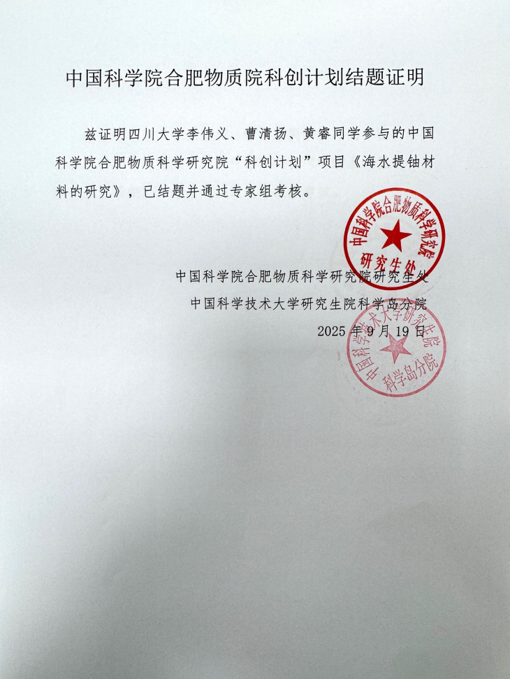
Contributed literature research, technical-route development involving microneedles, and visual communication. The team received a Silver Award in the Sichuan University round of the China International College Students’ Innovation Competition in August 2025.
Provided study-method guidance to high-school students, developed individual daily study plans, and communicated progress with students and parents.
Recognized for team leadership in a Sichuan University practical activity.
Studying Light Chemical Engineering, with coursework in polymer chemistry, physical chemistry, chemical engineering and biomaterials.
September 2023 – June 2027 (expected)
Combining collagen fiber networks with conductive polymer systems to study mechanical performance, environmental stability, multimodal sensing and triboelectric energy harvesting.
Exploring gelatin- and collagen-based hydrogels, dynamic covalent crosslinking and responsive material systems for wound healing and biomedical applications.
Investigating n-type PBFDO synthesis and its integration with collagen-based substrates, with an interest in processing, interfaces and electrical transport.
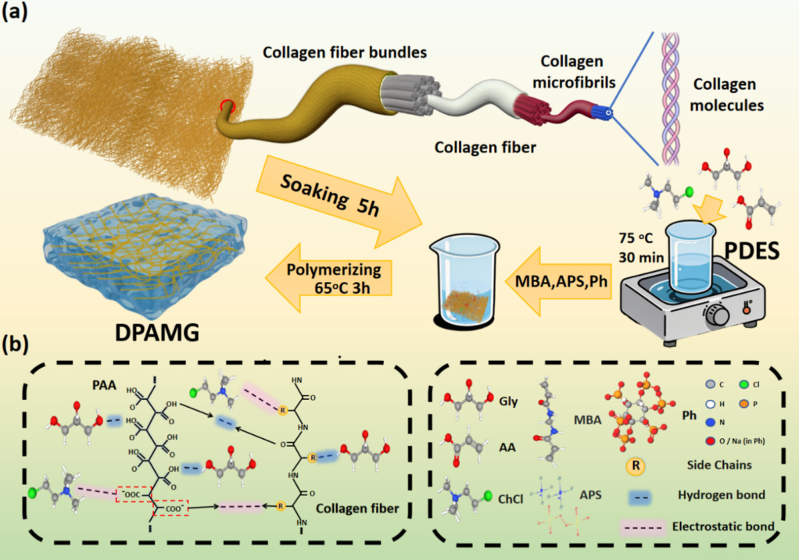
Weiyi Li, Jianxun Luo, Meijun Chen, Nianhua Dan, Haibin Gu
Chemical Engineering Journal · 529, 173225 First author
Read paper ↗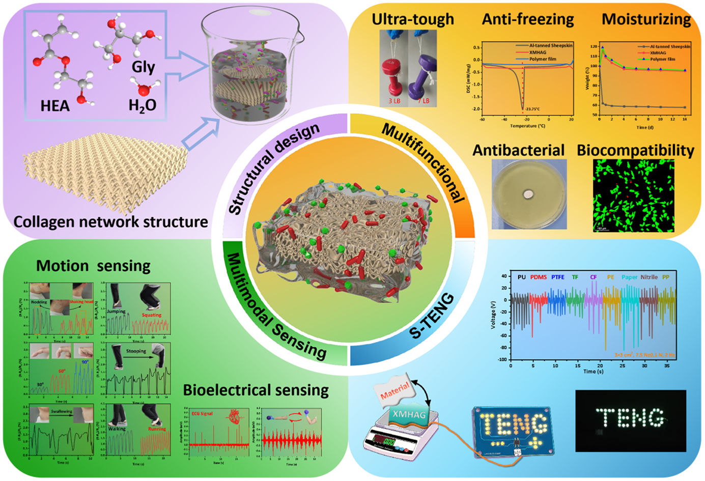
Fengming Gu, Meijun Chen, Weiyi Li, Haibin Gu
Journal of Materials Chemistry B
Read paper ↗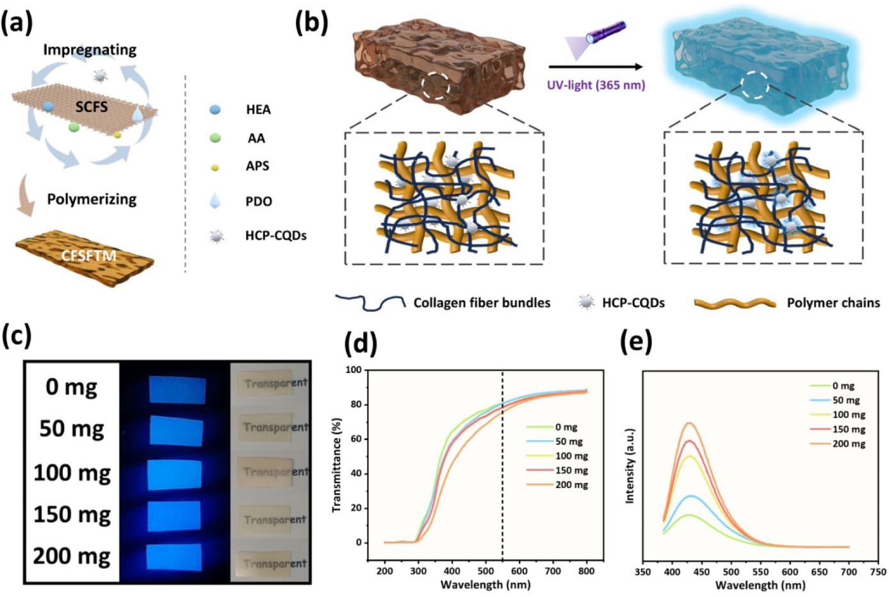
Xin Shi, Xin Wang, Weiyi Li, Meijun Chen, Nianhua Dan, Haibin Gu
Applied Materials Today · 48, 103052
Read paper ↗B.Eng. in Light Chemical Engineering · Chengdu, China
Research in conductive hydrogels, collagen-based functional materials and flexible devices. Coursework includes polymer chemistry, physical chemistry, chemical engineering and biomaterials.
Summer Research Programme · Hangzhou, China
Studied n-type conjugated polymer PBFDO synthesis through oxidative polymerization and reduction doping, and explored applications combining PBFDO with biomass materials.
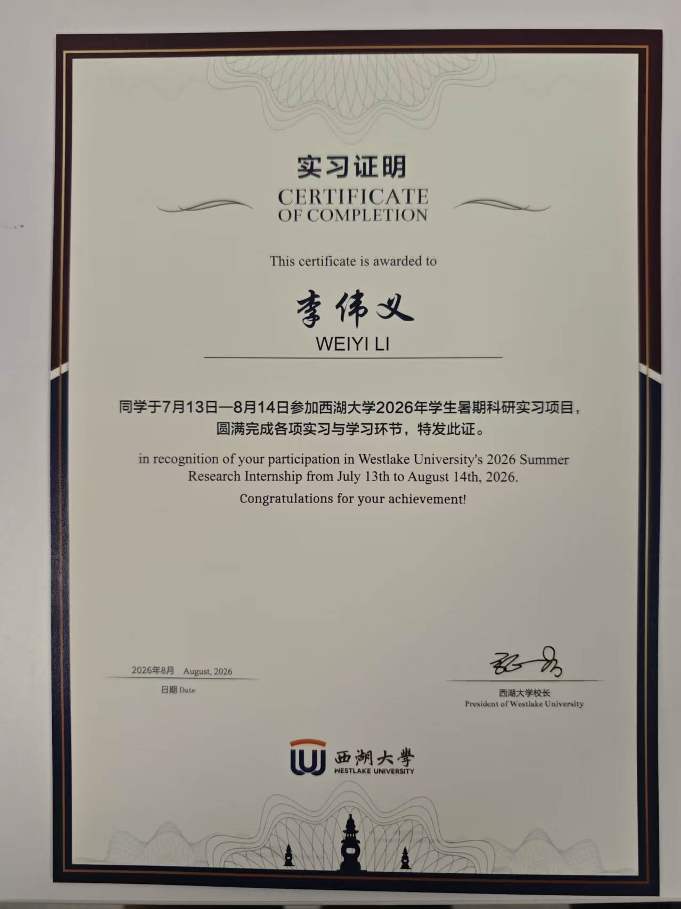
Sichuan University
Additional project experience in seawater uranium extraction and lipoic acid microgels. Recipient of the university's Third-Class Scholarship and Outstanding Student recognition for 2024–2025.
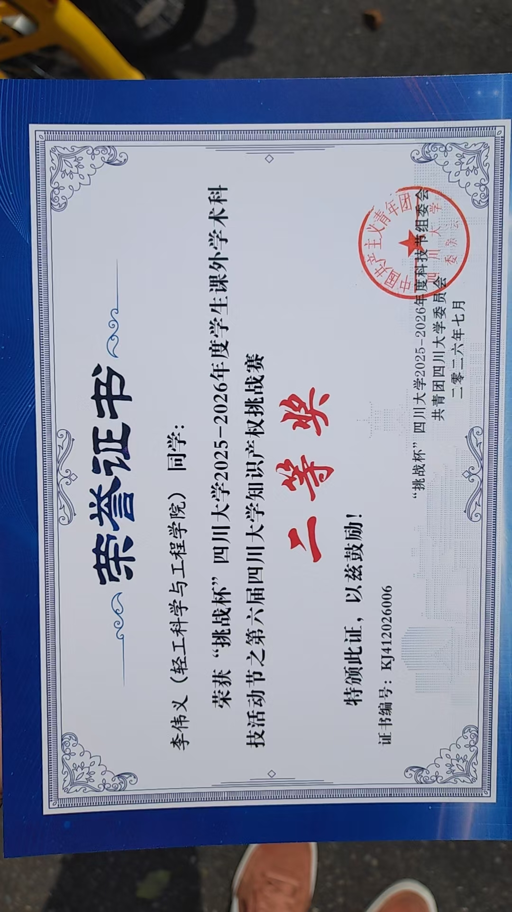
SCU Intellectual Property Challenge
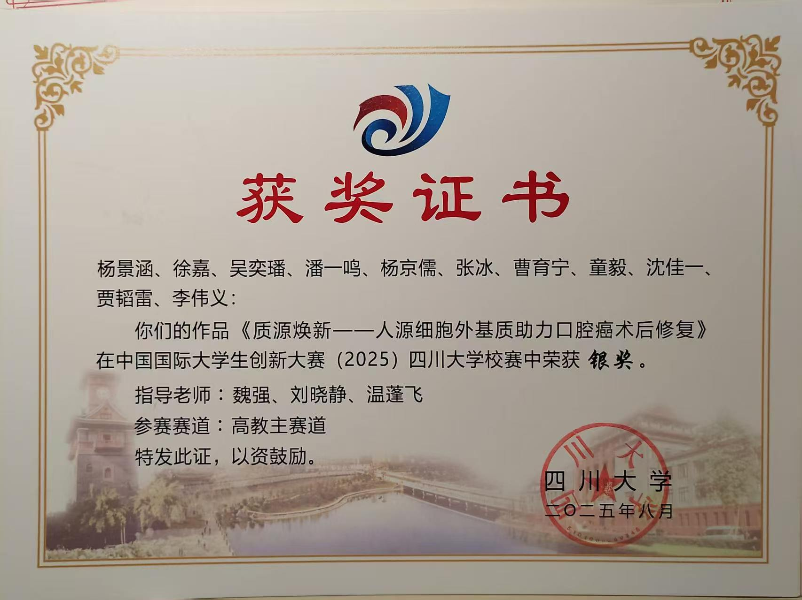
China International College Students’ Innovation Competition · SCU round
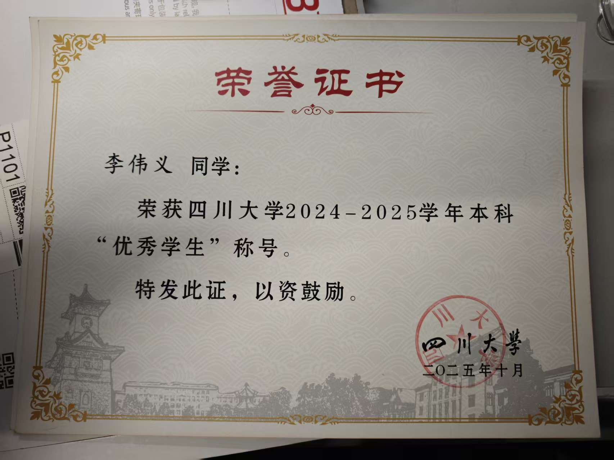
Sichuan University
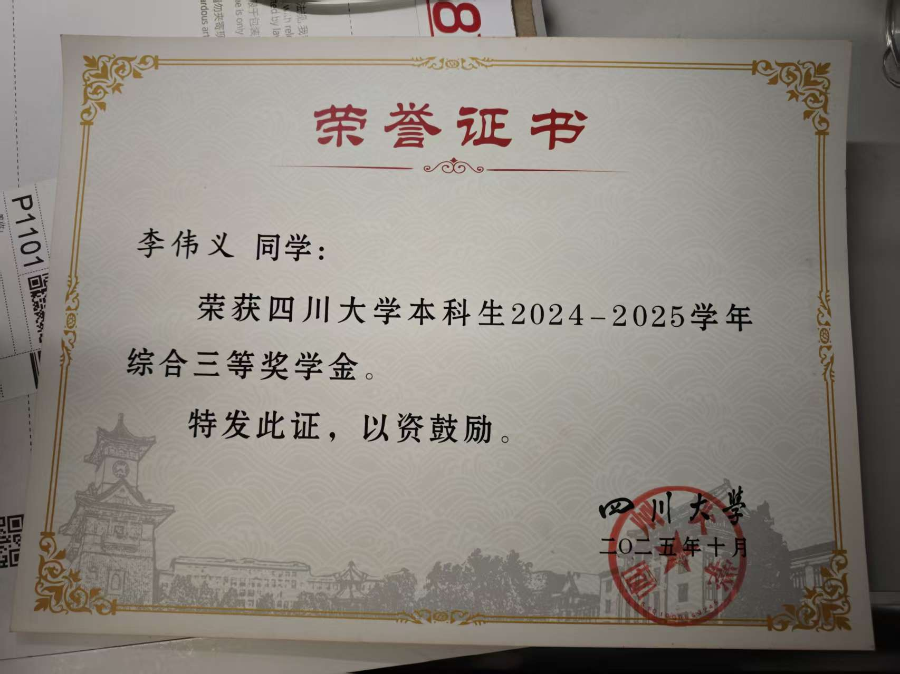
Sichuan University · Comprehensive Scholarship
For research discussions and academic opportunities.
Sichuan University · Chengdu, China
{kind=link}
{kind=link}
{kind=link}
{kind=link}